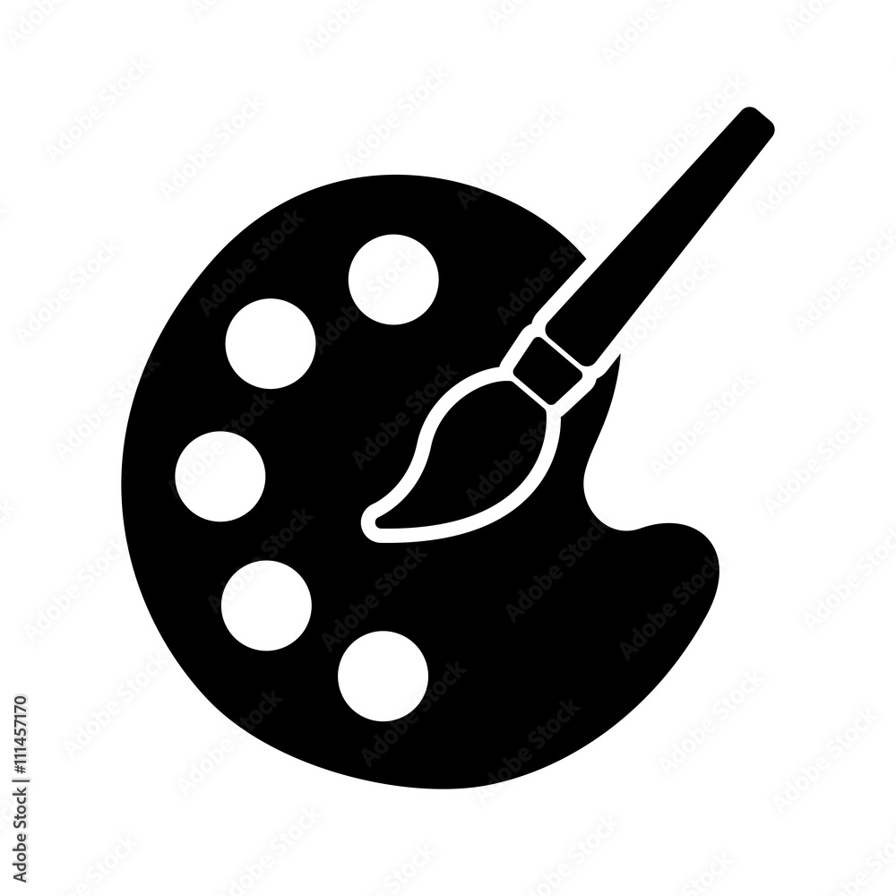
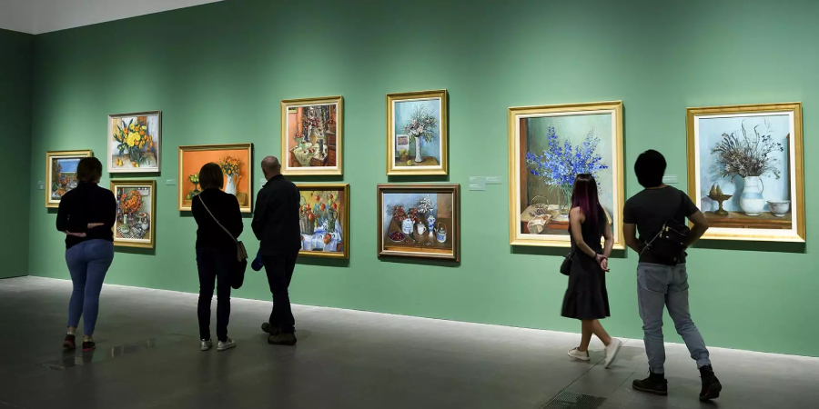

The Art Gallery-Resources

THE ART GALLERY showcases the largest and most unique collection of original artwork available.
We have brought together a unique and varied group of artists that we are proud to represent.
Some of the artwork that you may select from includes blown glass, oil and acrylic paintings, textiles,ceramics, mosaics, and much more.
All of our artwork is original, and we are proud to offer over forty years of custom framing experience.
Resources for Families
Free activities, events and more for children creatives aged 1-6
1.Spring Family Festival

Jump into spring with fun activities for all the family,inspired by seasonal colours,textures and patterns throughout the Gallery.
Discover the remarkable stories of individuals making a positive difference for the planet and create your own pieces of art.
2.Little Explorers

This session is recommended for ages 2+
Join us for our free monthly session for under 5s.
Explore the gallery and the collection with your family through stories, songs and making activities.
Resources for Young people
Free workshops, activities, events and more for young creatives aged 14-21
1.Attend events, workshops and join projects and youth forum.

Monthly events online and at the Gallery for a network of young people.
Find out more and join the forum on our Youth Forum page.
A three-day insights programme offering behind-the-scenes.
2.Meet the Young producers

Young Producers is a collective of 15 young people aged 18-21,
who will work across the Gallery to deliver two after-hours lates for other young people aged 16-25.
Think live music, performances, film screenings, artist talks, workshops, quiet spaces and more.
The Gallery will stay open late, exclusively for young people as they takeover and host their events.
Art
Investigate a wide variety of portraits from our collection and exhibitions through a series of resources and be inspired to create your own artworks in response.
Read interviews with artists and sitters to find out more about how portraits are made across a range of media.
1.Image and Identity

Image and Identity PDF
Learn through ideas,method and apporoaches used by artist who have made images of themselves
Self portraits
Studying portraits,images,information and discuss question
2.Photographers in focus

Behide the scence interviews with photographers from the collection